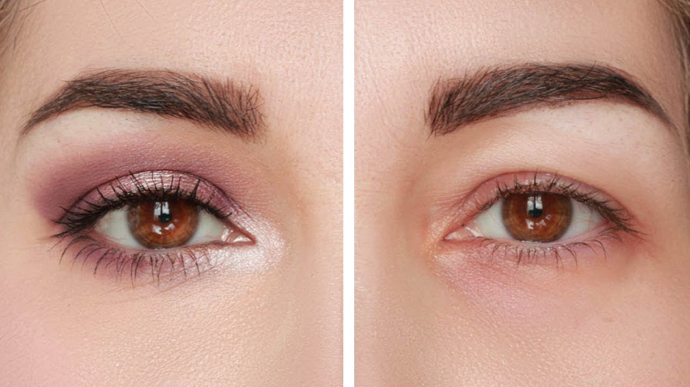

Ottica Bianchi – La qualitá nei tuoi occhi
- Gli occhi di Norman: Quel J’accuse che non lascia scampo
Ogni giorno i nostri occhi sono sottoposti a stress che possono provocare una serie di disturbi come l'Occhio secco e l'Occhio rosso. I prodotti Isomar Occhi sono appositamente studiati per una risposta mirata ai principali e più frequenti disturbi oculari. - Ottica Bianchi – La qualitá nei tuoi occhi
Dieci anni dal sacrificio di mio figlio, dieci anni di discesa agli inferi nel silenzio di buona parte della stampa e di tutte le istituzioni che dovrebbero implorare il perdono di quegli occhi di bambino, il cui j’accuse non lascia scampo ai filistei della cultura e ai mercanti del Tempio della politica italiota. - Shop Risparmio Casa - VENUS Detergente Bifase Viso e Occhi ...
Introduzione all’ ipermetropia L’ ipermetropia è una ametropia oculare in cui l’ immagine di un oggetto posto in lontananza va a fuoco dopo la retina, anzi che su di essa, a causa del potere diottrico dell’ occhio insufficiente, o del bulbo oculare troppo corto. - Isomar - Sollievo Occhi Rossi Gocce Oculari, Occhi di ...
L'innovativa formula bi-fase specifica per il trucco waterpproof deterge con delicatezza e strucca perfettamente viso e occhi. L'Acqua Virginiana, ad azione decongestionante, elimina le tossine, rinfresca, tonifica e risveglia lo splendore naturale del vi - Come rilevare problemi agli occhi in un 2-mese-vecchio ...
I migliori prodotti cosmetici per il contorno occhi in vendita su AMICAFARMACIA. Trattamenti contro le borse e occhiaie, struccanti e make up. Scopri subito le OFFERTE Bionike, Lierac, Avene, Vichy. - link cattolici: Alzo gli occhi verso il cielo
Gli occhi parlano. Fidatevi di me, non sono pazzo. Mento, sono pazzo. Ma gli occhi parlano, dicono molto, non stanno zitti un attimo. A volte ti feriscono, a volte ti fanno innamorare, con quelle loro dolci maniere. È incredibile come così, con tanta spontaneità riescano a trasmettere rabbia, felicità, addii e dei vaffanculo. Gli occhi parlano - Isomar - Prodotti Igiene Quotidiana Naso Orecchie Occhi ...
Tenere al sicuro le tue informazioni personali è la nostra priorità assoluta. Ti informiamo che abbiamo aggiornato la nostra politica sulla privacy secondo il regolamento europeo sulla protezione dei dati che entrerà in vigore il 25 maggio 2018 (GDPR) - Dite addio alle occhiaie con questi 4 contorno occhi!
Palette occhi ultra-pigmentata – multi-texture personalizzabili – base, ombretti, top coat scintillante, gel creatore di eyeliner 48,98 € Backstage Eye Prime - 10+ "Andrea Occhi" profiles | LinkedIn
Roma, occhi fissi su Chiesa Share; 3 del 06 settembre 2020 alle 10:36. 120 Il futuro di Federico Chiesa alla Fiorentina, al momento, è sempre in bilico. Le pretendenti, con il Milan in pole ... - Occhi
View the profiles of professionals named "Andrea Occhi" on LinkedIn. There are 10+ professionals named "Andrea Occhi", who use LinkedIn to exchange information, ideas, and opportunities.
Optometria Misurazione della vista Miopia Ipermetropia Astigmatismo Presbiopia Ottica Montature Lenti da vista Lenti da sole Lenti a contatto Anatomia oculare I nostri prodotti top
Basta disturbi visivi! Contattaci per una consulenza
Riceverai una mail con utilissime nozioni
Written by: Ottica Bianchi Lucia Posted on: September 8, 2020La lampada a fessura, lo strumento e il suo utilizzo.
Category: Misurazione della vistaLa lampada a fessura La lampada a fessura, o biomicroscopio, è uno strumento che serve per svolgere la contattologia e per esaminare la parte anteriore dell’ occhio. Infatti con essa si osserva l’ appoggio e il movimento della lente a contatto, la cornea, il film
Continue reading 0 Comment Written by: Ottica Bianchi Lucia Posted on: September 2, 2020Come gestire le lenti a contatto, istruzioni per chi le usa.
Category: Lenti a contattoCosa sono e come funzionano le lenti a contatto Le lenti a contatto sono degli strumenti correttivi per le ametropie come la miopia, l’ ipermetropia e l’ astigmatismo. Esistono anche le lenti a contatto multifocali che risolvono la presbiopia. Funzionano mettendo a fuoco il fascio
Continue reading 0 Comment Written by: Ottica Bianchi Lucia Posted on: August 30, 2020L’ origine dell’ ipermetropia refrattiva e come correggerla.
Category: IpermetropiaIntroduzione all’ ipermetropia L’ ipermetropia è una ametropia oculare in cui l’ immagine di un oggetto posto in lontananza va a fuoco dopo la retina, anzi che su di essa, a causa del potere diottrico dell’ occhio insufficiente, o del bulbo oculare troppo corto. Con
Continue reading 0 Comment Written by: Ottica Bianchi Lucia Posted on: August 30, 2020L’ origine della miopia refrattiva e la sua soluzione.
Category: MiopiaBreve introduzione sulla miopia La miopia è una ametropia dell’ occhio in cui l’ immagine di un oggetto lontano va a fuoco davanti alla retina, anzi che su di essa, a causa di un eccessivo potere diottrico dell’ occhio o di un bulbo oculare troppo
Continue reading 0 Comment Written by: Ottica Bianchi Lucia Posted on: August 30, 2020L’ ipermetropia assiale, quello che devi sapere.
Category: IpermetropiaBreve introduzione sull’ ipermetropia L’ ipermetropia è una ametropia oculare in cui l’ immagine di un oggetto posto in lontananza va a fuoco dopo la retina, anzi che su di essa, a causa del potere diottrico dell’ occhio insufficiente, o del bulbo oculare troppo corto .
Continue reading 0 Comment Written by: Ottica Bianchi Lucia Posted on: August 30, 2020Lo sviluppo della miopia assiale e la sua soluzione.
Category: MiopiaBreve introduzione sulla miopia La miopia è una ametropia oculare in cui l’ immagine di un oggetto lontano va a fuoco prima della retina, anzi che su di essa, a causa di un eccessivo potere diottrico dell’ occhio o di un bulbo oculare troppo lungo .
Continue reading 0 Comment Written by: Ottica Bianchi Lucia Posted on: August 23, 2020Le caratteristiche e i vantaggi delle lenti fotocromatiche.
Category: Lenti da vistaCosa sono le lenti fotocromatiche Le lenti fotocromatiche sono lenti da vista che hanno la capacità di scurirsi all’ aperto. Queste lenti sono chiare negli ambienti chiusi o di sera, mentre diventano scure di giorno sfruttando gli ultravioletti presenti nella luce. Un occhiale fotocromatico è
Continue reading 0 Comment Written by: Ottica Bianchi Lucia Posted on: August 21, 2020Le lenti a contatto e i sostituti lacrimali più adatti.
Category: Lenti a contattoCosa sono le lenti a contatto, come funzionano e come sono fatte Le lenti a contatto sono lenti graduate da applicare sulla superficie oculare per mettere a fuoco le immagini. Chi usa le lenti a contatto è un soggetto ametrope, che può essere miope, ipermetrope
Continue reading 0 Comment Written by: Ottica Bianchi Lucia Posted on: August 17, 2020L’ oftalmometro per misurare la cornea.
Category: Misurazione della vistaA cosa serve l’ oftalmometro e cosa è L’ oftalmometro è uno strumento che misura i raggi di curvatura della cornea e di conseguenza i poteri corneali. Il tipo più comune è quello di Javal-Schiotz. È costituito da un microscopio kepleriano e da due mire
Continue reading 0 Comment Written by: Ottica Bianchi Lucia Posted on: August 16, 2020Il bambino astigmatico corretto con le lenti a contatto.
Category: AstigmatismoCosa è l’ astigmatismo L’ astigmatismo deriva da una cornea che non ha una curvatura uniforme, ma ha raggi di curvatura e poteri diottrici diversi lungo i suoi meridiani. La differenza tra il potere corneale minimo e quello massimo si definisce astigmatismo. L’ occhio astigmatico
Continue reading 0 CommentPosts navigation
1 2 … 9 NextPagine social
Seguici suChi siamo
Siamo un negozio di Ottica e dal 1980 ci occupiamo di occhiali da vista, occhiali da sole, lenti a contatto, misurazioni della vista e riparazioni. Inoltre forniamo un servizio di assistenza post vendita.
Dove trovarci
Ci trovi a Sarzana, (SP), Liguria in via Ugo Muccini 15. Oppure sulle nostre pagine facebook, instagram e linkedin a nome Ottica Bianchi Lucia. Telefono 0187 629259
Orari
Lunedi pomeriggio: 15:30-19:30 Dal martedi al sabato: 9:00-12:30 15:30-19:30 Domenica e lunedi mattina chiuso
Il nostro lavoro
Cerchiamo di far conoscere, consigliare e proporre prodotti e soluzioni di qualità tecniche elevate per migliorare la visione e la vita delle persone.
© 2020 Ottica Bianchi - Theme by HappyThemes This website uses cookies to improve your experience. We'll assume you're ok with this, but you can opt-out if you wish. Cookie settings ACCEPT Privacy & Cookies Policy ClosePrivacy Overview
This website uses cookies to improve your experience while you navigate through the website. Out of these cookies, the cookies that are categorized as necessary are stored on your browser as they are essential for the working of basic functionalities of the website. We also use third-party cookies that help us analyze and understand how you use this website. These cookies will be stored in your browser only with your consent. You also have the option to opt-out of these cookies. But opting out of some of these cookies may have an effect on your browsing experience. Necessary Always EnabledNecessary cookies are absolutely essential for the website to function properly. This category only includes cookies that ensures basic functionalities and security features of the website. These cookies do not store any personal information.
Non-necessary Non-necessaryAny cookies that may not be particularly necessary for the website to function and is used specifically to collect user personal data via analytics, ads, other embedded contents are termed as non-necessary cookies. It is mandatory to procure user consent prior to running these cookies on your website.


Mauris vulputate dolor
Rutrum fermentum nibh in augue praesent urna congue rutrum.
Etiam posuere